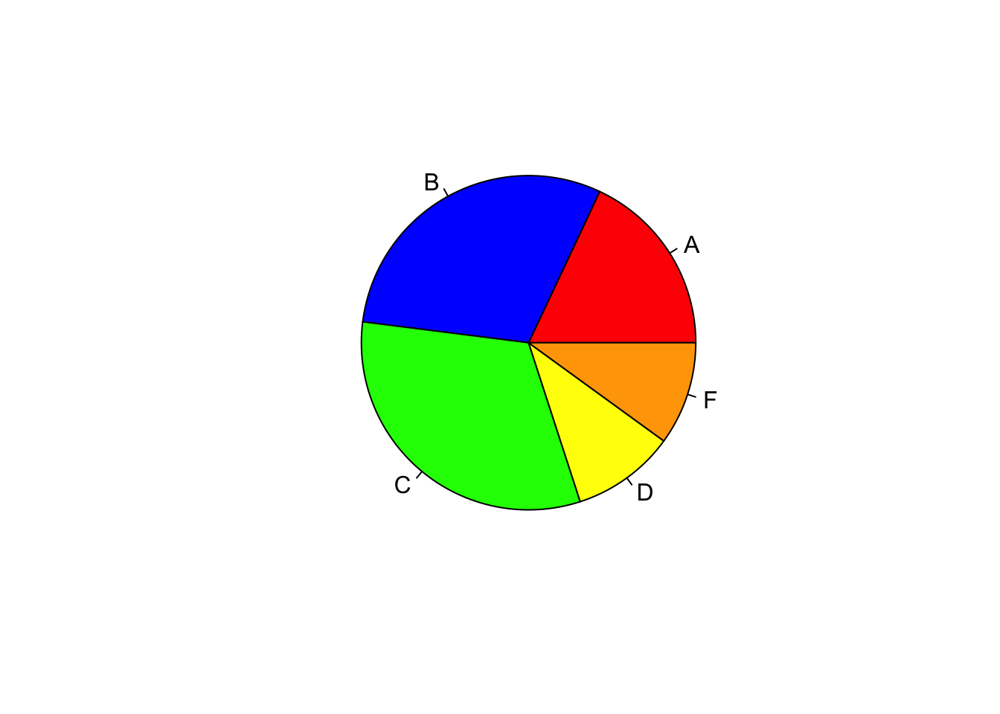
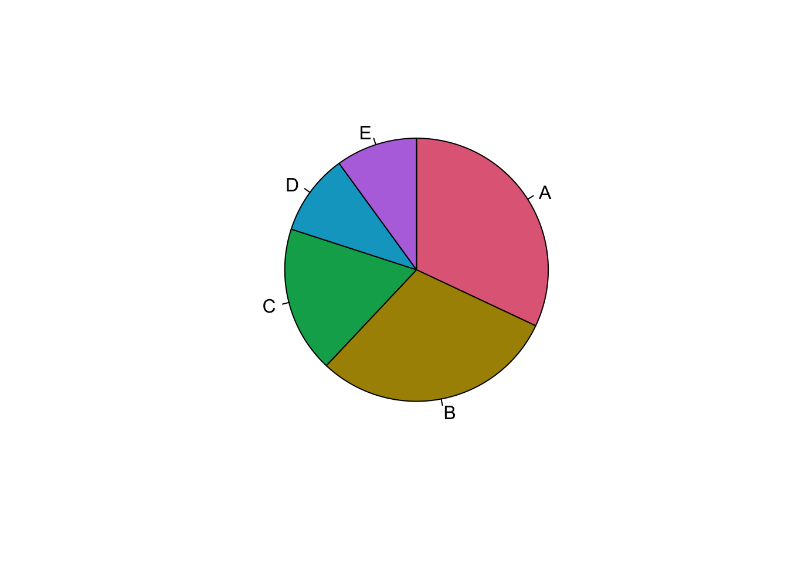

21 Pie Chart
Gráfico sencillo
grupos <- c(18, 30, 32, 10, 10)
etiquetas <- c("A", "B", "C", "D", "F")
pie(grupos,etiquetas,col=c("red", "blue", "green", "yellow", "orange"))
Los sectores no cumplen las condiciones estudiadas, porque no están ordendos los porcentajes de forma descendente:
## [1] "#E16A86" "#AA9000" "#00AA5A" "#00A6CA" "#B675E0"## [1] TRUEgrupos <- c(32, 30, 18, 10, 10)
etiquetas <- c("A", "B", "C", "D", "E")
pie(grupos,etiquetas,col= colmuestra, clockwise = T) # Paleta de colores
En r se pueden utilizar múltiples gamas de colores. Para conocer las posibilidades, es bueno explorar la paleta de colores.
En el ejemplo anterior, se escogió un gama de colores y se extrajo una muestra en forma de vector, esto porque los comandos de gráfico requieren usualmente, un vector de colores para el parámetro fill o colour
 # Diagrama de cajas
# Diagrama de cajas
Se usará la base de datos que trae R por defecto llamada Iris, la cuál contine información sobre el ancho y largo de sépalo y pétalo.
## 'data.frame': 150 obs. of 5 variables:
## $ Sepal.Length: num 5.1 4.9 4.7 4.6 5 5.4 4.6 5 4.4 4.9 ...
## $ Sepal.Width : num 3.5 3 3.2 3.1 3.6 3.9 3.4 3.4 2.9 3.1 ...
## $ Petal.Length: num 1.4 1.4 1.3 1.5 1.4 1.7 1.4 1.5 1.4 1.5 ...
## $ Petal.Width : num 0.2 0.2 0.2 0.2 0.2 0.4 0.3 0.2 0.2 0.1 ...
## $ Species : Factor w/ 3 levels "setosa","versicolor",..: 1 1 1 1 1 1 1 1 1 1 ...boxplot(Sepal.Length ~ Species, data = iris,ylab = "Largo Sepalo (cm)", main = "Medidas en la Tabla Iris",boxwex = 0.5,col="red")
 En el caso de virgínica, se puede detectar un dato atípico en la parte inferior del gráfico de caja
En el caso de virgínica, se puede detectar un dato atípico en la parte inferior del gráfico de caja
Seguidamente se trabajará con un ejemplo de una base de datos tomada del paquete mosaicData, que contie datos de vivienda de la comunidad de Saratoga County, New York, USA, 2006
casas <- SaratogaHouses
# graficos descriptivos cuandoe en el eje x tengo una variable categórica
g1 <- ggplot(casas, aes(centralAir, price))
g1 + geom_boxplot(alpha = 0.4, color = "blue") # Los puntos azules no son datos crudos, son puntos del Boxplot, los outliers o valores atípicos
# graficos descriptivos cuandoe en el eje x tengo una variable categórica
gg1 <- ggplot(casas, aes(centralAir, price))
gg1 + geom_jitter(width = 0.3, alpha = 0.4) +
geom_boxplot(alpha = 0.4, color = "blue") # Los puntos azules no son datos crudos, son puntos del Boxplot, los outliers o valores atípicos
gg1 + geom_jitter(width = 0.3, alpha = 0.4) +
geom_boxplot(alpha = 0.4, color = "blue") +
geom_violin(aes(alpha = 0.3, fill = centralAir))